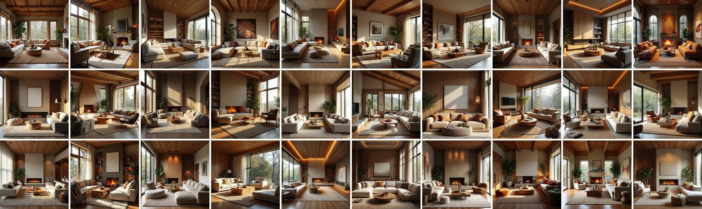
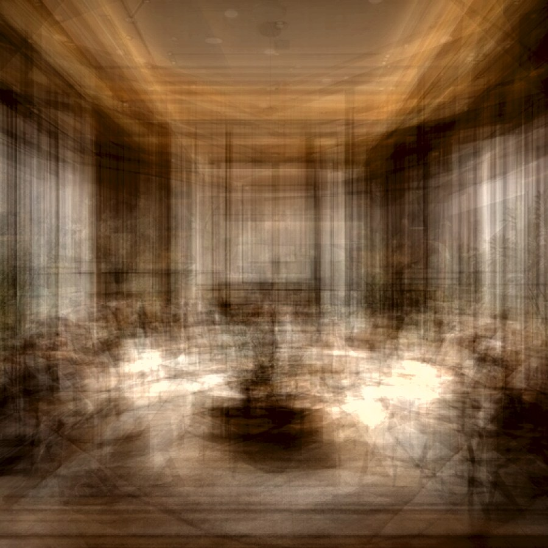

צחי שמש · עיצוב בעזרת בינה מלאכותית · HITמשימה 2: המרחב הלטנטי
Corpus: The Client Said
מילון קטן של מה שלקוחות אומרים למעצב, כפי שהמכונה מבינה אותו.
צחי שמש, 2026 · בעקבות Trevor Paglen
30 תמונות, פרומפט אחד: A living room that feels warm.
n=30
העבודה המקורית
Trevor Paglen
Adversarially Evolved Hallucinations
סדרה, 2017 ואילך · הדפסות דיי־סבלימציה
פגלן בנה סטים של אימון לפי טקסונומיות "לא שימושיות" מספרות, מפסיכואנליזה ומפולקלור, ולימד זוג רשתות GAN לזהות אותן ולייצר אותן. כל דימוי נושא שם של אובייקט, ובסוגריים את הקורפוס שממנו נולד.
Vampire (Corpus: Monsters of Capitalism), 2017. באדיבות האמן.
תגובה
בסדרה, פגלן בונה ארכיונים שאין להם שימוש: "מפלצות הקפיטליזם", "פירוש החלומות", "אותות ומופתים". שתי רשתות לומדות לזהות את הקטגוריות ולייצר אותן, עד שנוצר דימוי שאין לו מקור במציאות, אבל המכונה "מאמינה" שהוא ערפד או קשת.
הארכיון, ומה שחסר בו
אלפי תמונות שפגלן עצמו בחר וסיווג. מה שחסר הוא כל מה שמחוץ לספרייה שלו, שרובה קאנון מערבי. ההזיה רחבה רק כמו המדף שממנו נלקחה.
מה המרחב חושף, ומה הוא מעלים
הוא חושף שכל קטגוריה היא החלטה של מישהו: "ערפד" ו"בננה" הן הסכמה, לא עובדה.
“Every training set and every model contains a worldview.”
הוא מעלים את הרפרנט, ואת עשרות אלפי התוצרים שנפסלו בדרך לכל הדפסה.
אסטרטגיה
בשלב הדאטה זהו סירוב לקטגוריות ה"שימושיות" של שוק ושיטור. בשלב הפלט זהו גליץ': הטעות המתמשכת של המכונה היא היצירה.
היצירה
פגלן המציא קורפוסים. אני לקחתי קורפוס שכבר קיים, ושאני שומע בכל פגישה ראשונה כמעצב פנים: המילים שלקוחות משתמשים בהן כדי לתאר את הבית שהם רוצים.
לכל מילה נוצרו שני סטים של 30 תמונות, וכל סט חושב לממוצע פיקסלים אחד. מה שחוזר נשאר חד, מה שמשתנה נמחק. ההזיה היא המרכז של המרחב הלטנטי, כשהוא הופך לגלוי.
לפי המכונה
הפרומפט החשוף, 30 פעמים:
A living room that feels ___.
המכונה בוחרת לבד מה מתאים להגדרה.
לפי המעצב
אותה מילה, בתוך דירה ישראלית מתוארת: תקרת טיח, תריס אלומיניום, מזגן מפוצל. חמישה צירים שהגדרתי, 6 תמונות לכל ציר.
מהלך וכלים
"הממוצע" ו"מערכת סיווג משלכם".
Flux Dev (Magnific) · Python, OpenCV
עיבוד זהה לכל ההזיות: הבהרה ורוויה ×1.75.
הערכים
לכל מילה שתי הגדרות ושתי הזיות. גררו את הסליידר כדי לעבור בין מה שהמכונה רואה למה שהמעצב תיאר.
חָמִים
ת׳warm
לפי המכונה. בקתה צפון־אירופאית: תקרת עץ, ספה בז', אח בוערת בחצי מהתמונות, יער מאחורי החלון. אף אדם.
לפי המעצב. מאוורר תקרה, אריחים ותריס, וגם רדיאטור ב־19 מתוך 30 תמונות. בדירות ישראליות כמעט אין כאלה; ההטיה האירופאית נשארת גם כשמתארים לה את הדירה.
הערת שיטה. בניסוי הראשון כתבתי רק את המילה "ישראלי". המכונה החזירה את אותה בקתה עם אח, ו"דירה ישראלית ישנה" יצאה עם רדיאטורים ותמונה של מלאך נוצרי. רק תיאור פיזי של הדירה הזיז אותה.
60 התמונות שמהן נוצרו שתי ההזיות

לפי המכונהלפי המעצב · חומר, אור, אנשים, זיכרון, אקלים
נָקִי
ת׳clean
לפי המכונה. חדר מבוים לצילום: ספת L בז', שני עציצים סימטריים, ובכ־12 תמונות מסגרת ריקה על הקיר. נקי הוא מקום שאין בו על מה להסתכל.
לפי המעצב. חצי מהתמונות הן חדר ריק, כמו מודעת השכרה: נקי וישראלי יחד פירושם שאין פה אף אחד. היוצא מן הכלל הוא ספונג'ה, התמונות היחידות שבהן נקי הוא פעולה של מישהו.
לפי המכונהלפי המעצב · חומר, סדר, אור, ספונג'ה, נקי עם חיים
יֻקְרָתִי
ת׳luxurious
לפי המכונה. לא שיש ולא זהב: בז' שקט, שולחן עגול כהה, ותקרה מונמכת עם פס לד שנשאר חד בתוך הממוצע. יוקרה היא תאורה נסתרת.
לפי המעצב. "דירת קבלן" יצאה מדויקת להפליא: קיר טלוויזיה בחיפוי שיש, גבס עם לד, פורצלן מבריק. את זה המכונה מכירה היטב. הפס הכחול באמצע הוא הים, מהפנטהאוז ומהווילה.
לפי המעצב · שיש ופליז, פנטהאוז, דירת קבלן, וילה בהרצליה, תל אביב של שנות ה־30
כְּמוֹ בְּמָלוֹן
ביט׳like a hotel
לפי המכונה. כמעט זהה ל"יוקרתי": אותה ספה, אותו שולחן, אותה מסגרת אור. ההבדל היחיד הוא נוף של מגדלים בחלון. מלון ויוקרה הן מילה אחת.
לפי המעצב. החדר האמין ביותר בכל הפרויקט הוא "חדר מלון רגיל באמת": מוקט, מזגן מתחת לחלון, מיני בר. אילת, ים המלח והצימר בגליל נמסים לחלון אחד בהיר עם אופק.
Like a Hotel (Corpus: The Client Said), Hallucination, 2026 · n=30 / 28

לפי המעצבלפי המכונה
לפי המעצבלפי המכונה
58 התמונות שמהן נוצרו שתי ההזיות
לפי המכונהלפי המעצב · אילת, בוטיק בתל אביב, ים המלח, חדר מלון רגיל, צימר בגליל
במה היצירה עונה לעבודה
פגלן בנה קורפוסים לא רציונליים כדי לגרום למכונה להזות את מה שאינו קיים. אני משתמש בקורפוס הכי יומיומי שיש, המילים של הלקוחות, ומראה שהמכונה כבר הוזה אותו: היא מצמצמת כל מילה לאותו חדר בז' בלי אנשים, וגם כשמתארים לה דירה ישראלית במפורש היא משאירה בה רדיאטור. תפיסת העולם שפגלן הצביע עליה כבר לא נמצאת בארכיון של אמן; היא נכנסת לבריף, ומשם לבתים של אנשים.


 לפי המעצבלפי המכונה
לפי המעצבלפי המכונה